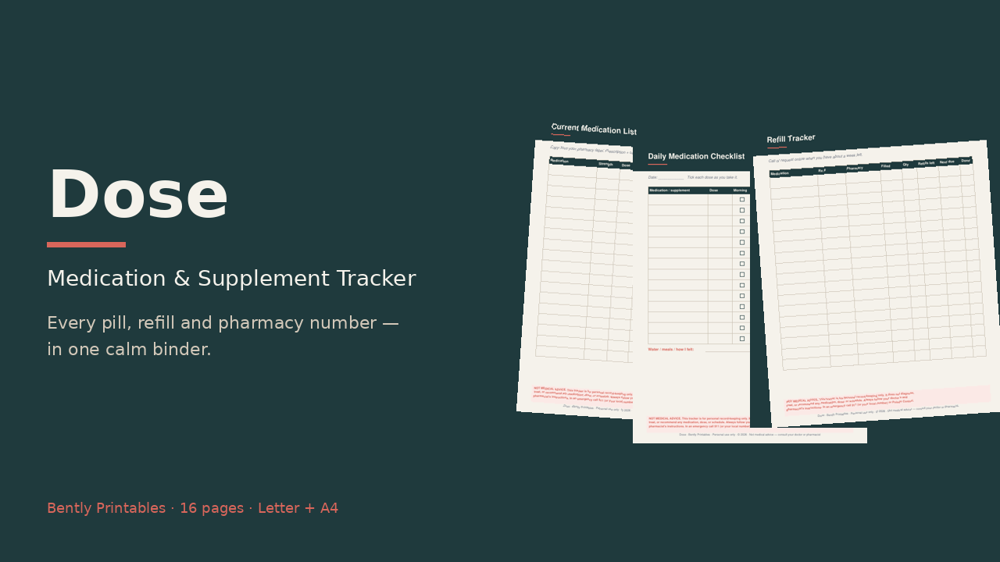

16 printable pages, Letter + A4
- Health profile & allergies
- Medication list · supplements log · change log
- Daily checklist · weekly dose grid · refill tracker
- Pharmacy & care-team contacts · symptom notes · appointment questions
- 3 blank masters
Start free
Download the daily medication checklist, then grab the full pack.
Personal record-keeping only. Not medical advice; not for diagnosing or treating any condition. Always consult your doctor or pharmacist.